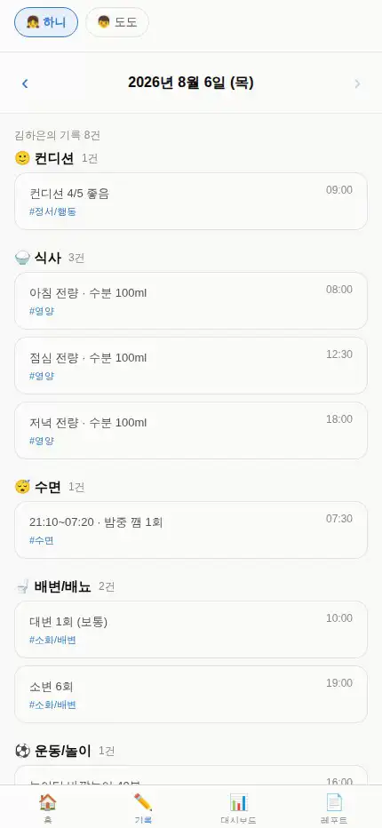
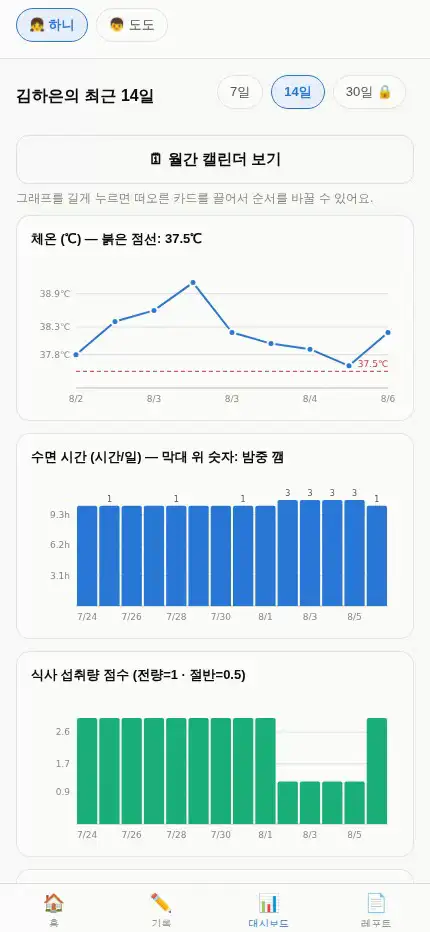
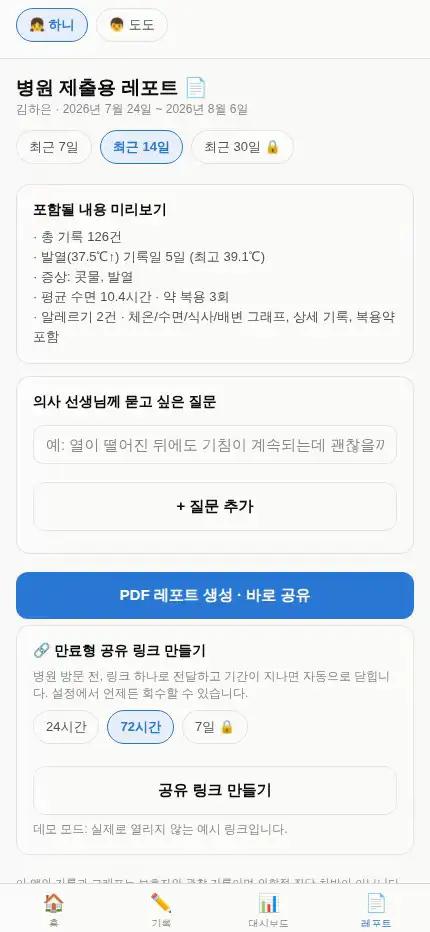

베타 테스터 100명 모집
열이 39도까지 올랐던 게
열이 39도까지 올랐던 게
화요일이었나, 수요일이었나
그날은 분명히 기억나는데 진료실 앞에만 서면 하얘집니다. 매일 한 줄만 남겨두면, 진료 때 그대로 꺼내 보여줄 기록으로 정리해 드립니다.
신청이 접수되었습니다. 완성되면 이 주소로 가장 먼저 보내드릴게요.

기억은 사흘이면 뭉개집니다
01
며칠째 열이 나는지, 어제보다 나아진 건지 숫자로 답해야 하는 순간이 옵니다.
02
수첩에 적어두면 찾다가 놓치고, 메모 앱에 적으면 흩어져서 못 씁니다.
03
정리된 기록을 가져가면 진료가 빨라집니다. 선생님이 물어볼 것을 미리 준비해 가는 셈입니다.
남기면, 이렇게 정리됩니다
아래는 목업이 아니라 지금 동작하는 앱을 그대로 녹화한 화면입니다.
01 · 남기기
유형을 고르고 몇 글자만. 체온·수면·식사·증상 등 12가지 항목을 남길 수 있습니다.

02 · 흐름 보기
기간을 바꾸면 그래프가 다시 그려집니다. 37.5℃ 기준선을 넘은 날이 한눈에 보입니다.

03 · 병원에 보여주기
기간을 고르면 “발열 5일 · 최고 39.1℃”처럼 요약해 줍니다. 진료실에서 그대로 펼치면 됩니다.
혼자 만들고 있습니다
회사도 팀도 아직 없습니다. 1인 개발로 만들고 있고, 지금은 기록·그래프·레포트까지 동작하는 단계입니다. 위 화면이 그 증거입니다.
그래서 완성 날짜를 약속드리지 않겠습니다. 대신 준비되는 대로 베타 테스터 100분께 접속 주소를 가장 먼저 보내드립니다. 쓰시면서 불편한 점을 알려주시면 그게 다음 버전이 됩니다.
궁금한 점은 __CONTACT_EMAIL__ 로 편하게 보내주세요.
완성되면 가장 먼저 알려드릴게요
이메일 하나만 남겨주시면 됩니다.